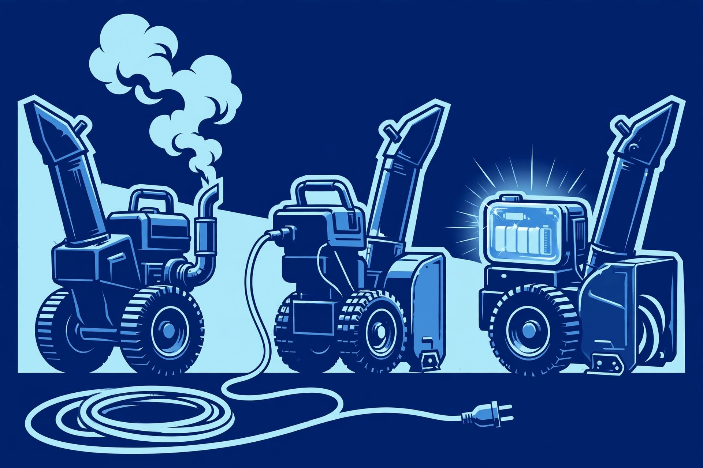

Walk into a snowblower aisle and the first fork in the road is power: gasoline engine, corded electric, or battery. Each one is genuinely the right answer for somebody — and a frustrating wrong answer for somebody else. The trick is knowing which somebody you are before you spend the money.
Start with your driveway, not the machine
Three things decide this for you: how much area you clear, what your snow is like, and how much machine you can (or want to) handle. A short city driveway with light, fluffy snow is a completely different job than a long rural drive that gets heavy, wet accumulation. Be honest about all three — the person who buys too much machine dreads hauling it out; the person who buys too little dreads the storm that beats it.
Gas: the workhorse
Gas snowblowers are the traditional choice and still the most capable for heavy work. A gas engine drives the auger and impeller with force that no cordless machine matches, which matters most in wet, heavy snow and deep drifts. If you clear a long driveway, deal with the packed ridge the plow leaves at the curb, or live somewhere the snow arrives in serious volume, gas is usually the honest answer.
The tradeoffs are real. Gas machines need fuel, oil changes, spark plugs, and seasonal prep (see our first-snowfall checklist). They're loud, they produce exhaust, they're heavy to maneuver and store, and a neglected one is the machine most likely to refuse to start on the morning you need it most. If you're not willing to do basic maintenance — or pay someone who will — gas will punish you.
Corded electric: simple and light
A corded electric snowblower is the minimalist option: plug it in and go. No fuel, no oil, no spark plugs, barely any maintenance. They're light, quiet, and start every time you press the button. For a small driveway, walkway, or deck in an area that gets light to moderate snow, a corded electric is often the smartest, cheapest tool for the job.
The cord is the catch. You're tethered to an outlet, which limits range and means managing a long outdoor-rated extension cord in the snow — a genuine chore and a genuine tripping consideration. Deep or heavy, wet snow will overwhelm most corded machines; they're single-stage, light-duty tools. If your snowfall regularly arrives deep or your driveway is long, the cord becomes a leash.
Battery: the middle ground that's getting better
Battery-powered (cordless) snowblowers sit between the other two: the instant-start, low-maintenance convenience of electric with the freedom to roam like gas. No fuel to store, much quieter than gas, and modern batteries have made them genuinely capable for moderate driveways and average snowfalls.
The limits are runtime and cost. A battery clears until it's done — heavy, wet snow drains batteries fast, and a second battery (or two) is often effectively required for bigger jobs, which adds real cost. Cold weather also reduces battery capacity, which is worth knowing when your machine's job is literally in the cold. They're a great fit for medium driveways and owners who value quiet, clean, low-maintenance operation over maximum muscle.
Short driveway + light snow + hate maintenance: corded electric or battery. Medium driveway + typical snow + want easy: battery. Long driveway + heavy or wet snow + plow ridges: gas. When in doubt, size up one notch — an underpowered machine in a February storm is misery.
Snow type matters more than people admit
Light, dry, fluffy snow is easy for almost anything. The trouble is wet, heavy snow — the kind that soaks your gloves in minutes — plus the dense, icy ridge the street plow packs at the end of your driveway. That ridge is often the hardest part of the whole job, and it's where weaker machines stall and stronger ones earn their keep. If your area gets the heavy wet stuff regularly, weight your choice toward the more capable end.
Don't forget the human factors
Think about who operates the machine. A heavy two-stage gas blower is a lot of machine for someone with a bad back or limited strength — a lighter battery unit that actually gets used beats a gas monster that stays in the garage. Consider storage: gas needs ventilation and fuel kept safely away from the house; batteries need a dry, above-freezing spot for charging. And consider noise: early-morning clearing with a gas engine is a neighbor-relations decision.
The bottom line
There is no best snowblower power source — there is only the one that matches your driveway, your snow, and your willingness to maintain it. Pick the power source first, then move on to what to look for before you buy, where width, stages, and the other specs get their plain-language treatment.